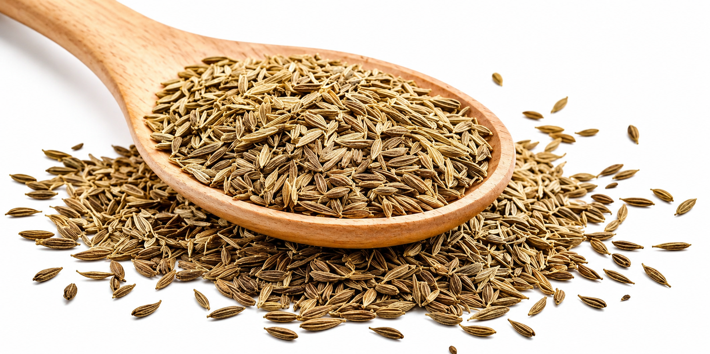

Indian Cumin Seeds Exporter
Premium quality Indian cumin seeds sourced from trusted suppliers for importers, wholesalers, food processors, spice brands, and distributors worldwide.
Request Quote
Built for International Buyers
Our cumin seed supply is suitable for spice brands, food processors, wholesalers, distributors, and importers who need reliable sourcing from India with buyer-specific packaging and export coordination.
Common Applications
For retail packs, blends, and private label product lines.
For seasoning, ready-to-eat foods, snacks, sauces, and spice mixes.
For bulk trading and distribution in local markets.
For regular container-based sourcing from India.
How We Handle Your Order
We confirm purity, quantity, packaging, and destination.
We coordinate with trusted Indian suppliers and processors.
Material is checked as per buyer-specific requirements.
Bulk bags or private label packaging is arranged.
Export documents are prepared as per shipment needs.
FOB or CIF shipment support is coordinated.
Frequently Asked Questions
Can you provide private label packaging?
Yes, buyer-specific private label packaging can be arranged depending on quantity and packaging requirements.
Do you supply cumin seeds in bulk?
Yes, cumin seeds can be supplied in 25kg and 50kg bulk packaging options.
Can you quote FOB and CIF?
Yes, we can support both FOB and CIF quotation depending on the buyer’s destination and shipment preference.
Request a Cumin Seeds Quote
Share your required quantity, purity, destination port, and packaging type. Our team will respond with suitable sourcing and export options.
Request Quote